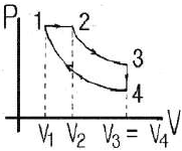
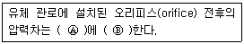
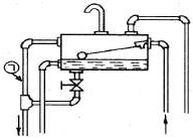

에너지관리산업기사 (2016-10-01 기출문제)
1과목: 열역학 및 연소관리
1. 다음 중 열관류율의 단위로 옳은 것은?
- kcal/m2ㆍhㆍ℃
- kcal/mㆍhㆍ℃
- kcal/h
- kcal/m2ㆍh
(정답률: 86%)

2. 0℃의 얼음 100g을 50℃의 물 400g에 넣으면 몇℃가 되는가? (단, 얼음의 융해잠열 80kcal/kg이고, 물의 비열은 1kcal/kgㆍ℃로 가정한다.)
- 8.4℃
- 13.5℃
- 26.7℃
- 38.8℃
(정답률: 56%)
3. 액체 연료 연료방식에서 연료를 무화시키는 목적으로 틀린 것은?
- 연소효율을 높이기 위하여
- 연소실의 열부하를 낮게 하기 위하여
- 연료와 연소용 공기의 혼합을 고르게 하기 위하여
- 연료 단위 중량당 표면적을 크게 하기 위하여
(정답률: 66%)
4. 기체연료의 연소 형태로서 가장 옳은 것은?
- 확산연소
- 증발연소
- 표면연소
- 분해연소
(정답률: 89%)
5. 회분이 연소에 미치는 영향에 대한 설명으로 틀린 것은?
- 연소실의 온도를 높인다.
- 통풍에 지장을 주어 연소효율을 저하시킨다.
- 보일러 벽이나 내화벽돌에 부착되어 장치를 손상 시킨다.
- 용융 온도가 낮은 회분은 클린커(clinker)를 작용시켜 통풍을 방해한다.
(정답률: 85%)
6. 압력 0.2MPa, 온도 200℃의 이상기체 2kg이 가역단열과정으로 팽창하여 압력이 0.1MPa로 변화하였다. 이 기체의 최종온도는? (단, 이 기체의 비열비는 1.4 이다.)
- 92℃
- 115℃
- 365℃
- 388℃
(정답률: 68%)
7. 정적과정, 정압과정 및 단열과정으로 구성된 사이클은?
- 카르노사이클
- 디젤사이클
- 브레이턴사이클
- 오토사이클
(정답률: 65%)
8. 습증기의 건도에 관한 설명으로 옳은 것은?
- 습증기 1kg 중에 포함되어 있는 액체의 양을 습증기 1kg 중에 포함된 건포화증기의 양으로 나눈 값
- 습증기 1kg 중에 포함되어 있는 건포화 증기의 양을 습증기 1kg 중에 포함된 액체의 양으로 나눈 값
- 습증기 1kg 중에 포함되어 있는 액체의 양을 습증기 1kg 으로 나눈 값
- 습증기 1kg 중에 포함되어 있는 건포화 증기의 양을 습증기 1kg 으로 나눈 값
(정답률: 68%)
9. 다음 연료 중 이론공기량(Nm3/Nm3)을 가장 많이 필요로 하는 것은? (단, 동일 조건으로 기준한다.)
- 메탄
- 수소
- 아세틸렌
- 이산화탄소
(정답률: 70%)
10. 오토 사이클에서 압축비가 7 일 때 열효율은? (단, 비열비 k=1.4 이다.)
- 0.13
- 0.38
- 0.54
- 0.76
(정답률: 63%)
11. 물 1kg 이 100℃에서 증발할 때 엔트로피의 증가량은? (단, 이 때 증발열은 2257kJ/kg이다.)
- 0.01kJ/kgㆍK
- 1.4kJ/kgㆍK
- 6.1kJ/kgㆍK
- 22.5kJ/kgㆍK
(정답률: 54%)
12. 온도 27℃, 최초 압력 100kPa인 공기 3kg을 가역단열적으로 1000kPa까지 압축하고자 할 때 압축일의 값은? (단, 공기의 비열비 및 기체상수는 각각 K=1.4, R=0.287kJ/kgㆍK이다.)
- 200kJ
- 300kJ
- 500kJ
- 600kJ
(정답률: 42%)
13. 대기압 하에서 건도가 0.9인 증기 1kg이 가지고 있는 증발잠열은?
- 53.9kcal
- 100.3kcal
- 485.1kcal
- 539.2kcal
(정답률: 65%)
14. 공기 과잉 계수(공기비)를 옳게 나타낸 것은?
- 실제연소 공기량 ÷ 이론공기량
- 이론공기량 ÷ 실제연소 공기량
- 실제연소 공기량 - 이론공기량
- 공급공기량 –이론공기량
(정답률: 83%)
15. 디젤사이클의 이론열효율을 표시하는 식에서 차단비(cut off ratio) σ를 나타내는 식으로 옳은 것은?

- σ = V1/V3
- σ = V3/V1
- σ = V2/V1
- σ = V1/V2
(정답률: 70%)
16. 5kcal의 열을 전부 일로 변환하면 몇 kgfㆍm 인가?
- 50kgfㆍm
- 100kgfㆍm
- 327kgfㆍm
- 2135kgfㆍm
(정답률: 68%)
17. 기체연료 저장설비인 가스홀더의 종류가 아닌 것은?(오류 신고가 접수된 문제입니다. 반드시 정답과 해설을 확인하시기 바랍니다.)
- 유수식 가스홀더
- 무수식 가스홀더
- 고압 가스홀더
- 저압 가스홀더
(정답률: 60%)
18. 어떤 기체가 압력 300kPa, 체적 2m3의 상태로부터 압력 500kPa, 체적 3m3의 상태로 변화하였다. 이 과정 중에 내부에너지의 변화가 없다고 하면 엔탈피의 변화량은?
- 570kJ
- 870kJ
- 900kJ
- 975kJ
(정답률: 65%)
19. 프로판가스 1Nm3를 완전연소시키는 데 필요한 이론공기량은? (단, 공기 중 산소는 21% 이다.)
- 21.92Nm3
- 22.61Nm3
- 23.81Nm3
- 24.62Nm3
(정답률: 68%)
20. 압력에 관한 설명으로 옳은 것은?
- 압력은 단위면적에 작용하는 수직성분과 수평성분의 모든 힘으로 나타낸다.
- 1Pa는 1m2에 1kg의 힘이 작용하는 압력이다.
- 절대압력은 대기압과 게이지압력의 합으로 나타낸다.
- A, B, C기체의 압력을 각각 Pa, Pb, Pc 라고 표현할 때 혼합기체의 압력은 평균값인 (Pa + Pb + Pc)/3 이다.
(정답률: 86%)
2과목: 계측 및 에너지진단
21. 다음 Ⓐ, Ⓑ에 들어갈 내용으로 적절한 것은?

- Ⓐ 유량의 제곱, Ⓑ 비례
- Ⓐ 유량의 평방근, Ⓑ 비례
- Ⓐ 유량, Ⓑ반비례
- Ⓐ 유량의 평반근, Ⓑ 반비례
(정답률: 71%)
22. 수위제어방식이 아닌 것은?
- 1요소식
- 2요소식
- 3요소식
- 4요소식
(정답률: 86%)
23. 다음 중 저압가스의 압력측정에 사용되며, 연돌가스의 압력측정에 가장 적당한 압력계는?
- 링밸런스식 압력계
- 압전식 압력계
- 분동식 압력계
- 부르동관식 압력계
(정답률: 71%)
24. 다음 중 유량을 나타내는 단위가 아닌 것은?
- m3/h
- kg/min
- L/s
- kg/cm2
(정답률: 83%)
25. 보일러 자동제어의 수위제어방식 3요소식에서 검출하지 않는 것은?
- 수위
- 노내압
- 증기유량
- 급수유량
(정답률: 72%)
26. 다음 중 온도를 높여주면 산소 이온만을 통과시키는 성질을 이용한 가스분석계는?
- 세라믹 O2계
- 갈바닉 전자식 O2계
- 자기식 O2계
- 적외선 가스분석계
(정답률: 76%)
27. 열전달에 대한 설명으로 틀린 것은?
- 유체의 밀도차에 의한 유동에 의해 열이 전달되는 형태는 전도이다.
- 대류 전열에는 자연대류와 강제대류 방식이 있다.
- 중간 열매체를 통하지 않고 열이 이동되는 형태는 복사이다.
- 열전달에는 전도, 대류, 복사의 3방식이 있다.
(정답률: 70%)
28. 측정기의 우연오차와 가장 관련이 깊은 것은?
- 감도
- 부주의
- 보정
- 산포
(정답률: 73%)
29. 1차 제어장치가 제어명령을 하고 2차 제어장치가 1차 명령을 바탕으로 제어량을 조절하는 측정제어는?
- 캐스케이드제어
- 추종제어
- 프로그램제어
- 비율제어
(정답률: 87%)
30. 저항식 습도계의 특징에 관한 설명으로 틀린 것은?
- 연속기록이 가능하다.
- 응답이 느리다.
- 자동제어가 용이하다.
- 상대습도 측정이 쉽다.
(정답률: 72%)
31. 지름이 200mm인 관에 비중이 0.9인 기름이 평균속도 5m/s로 흐를 때 유량은?
- 14.7kg/s
- 15.7kg/s
- 141.4kg/s
- 157.1kg/s
(정답률: 55%)
32. 제어동작 중 제어량에 편차가 생겼을 때 편차의 적분차를 가감하여 조작단의 이동속도가 비례하는 동작으로 잔류편차가 남지 않으나 제어의 안정성이 떨어지는 동작은?
- 2위치 동작
- 비례 동작
- 미분 동작
- 적분 동작
(정답률: 70%)
33. 압력계 선택 시 유의하여야 할 사항으로 틀린 것은?
- 진동이나 충격 등을 고려하여 필요한 부속품을 준비하여야 한다.
- 시용목적에 따라, 크기, 등급, 정도를 결정한다.
- 사용압력에 따라 압력계의 범위를 결정한다.
- 사용 용도는 고려하지 않아도 된다.
(정답률: 92%)
34. 다음 중 탄성식 압력계가 아닌 것은?
- 부르동관식 압력계
- 링 밸런스식 압력계
- 벨로즈식 압력계
- 다이어프램식 압력계
(정답률: 81%)
35. 다음 중 온-오프동작(on-off action)은?
- 2위치 동작
- 적분 동작
- 속도 동작
- 비례 동작
(정답률: 89%)
36. 가스분석계인 자동화학식 CO2계에 대한 설명으로 틀린 것은?
- 오르자트(orsat)식 가스분석계와 같이 CO2를 흡수액에 흡수시켜 이것에 의한 시료 가스 용액의 감소를 측정하고 CO2농도를 지시한다.
- 피스톤의 운동으로 일정한 용적의 시료 가스가 CaCO2용액 중에 분출되며 CO2는 여기서 용액에 흡수된다.
- 조작은 모두 자동화되어 있다.
- 흡수액에 따라 O2 및 CO의 분석계로도 사용할 수 있다.
(정답률: 65%)
37. 압력식 온도계가 아닌 것은?
- 액체압력식 온도계
- 증기압력식 온도계
- 열전 온도계
- 기체압력식 온도계
(정답률: 88%)
38. 적외선 가스분석계의 특징에 대한 설명으로 옳은 것은?
- 선택성이 뛰어나다.
- 대상범위가 좁다.
- 저농도의 분석에 부적합하다.
- 측정가스의 더스트 방지나 탈습에 충분한 주의가 필요 없다.
(정답률: 74%)
39. 열전대 온도계의 특징이 아닌 것은?
- 냉접점이 있다.
- 접촉식으로 가장 높은 온도를 측정한다.
- 전원이 필요하다.
- 자동제어, 자동기록이 가능하다.
(정답률: 78%)
40. 다음 중 열량의 계량단위가 아닌 것은?
- J
- kWh
- Ws
- kg
(정답률: 81%)
3과목: 열설비구조 및 시공
41. 증기 보일러에서 안전밸브 부착에 대한 설명으로 옳은 것은?
- 보일러 몸체에 직접 부착시키지 않는다.
- 밸브 축을 수직으로 하여 부착한다.
- 안전밸브는 항상 3개 이상 부착해야 한다.
- 안전을 고려하여 쉽게 보이는 곳에 설치하지 않는다.
(정답률: 77%)
42. 아래 팽창탱크 구조 도시에서 ㉠으로 지시된 관의 명칭은?

- 통기관
- 안전관
- 배수관
- 오버플로우관
(정답률: 85%)
43. 보일러 과열기에 대한 설명으로 틀린 것은?
- 과열기를 설치함으로써 보일러 열효율을 증대시킬 수 있다.
- 과열기 내의 증기와 연소가스의 흐름 방향에 따라 병향류식, 대향류식, 혼류식으로 구분할 수 있다.
- 전열방식에 따라 방사형, 대류형, 방사대류형이 있다.
- 과열기 외부는 황(S)에 대한 저온 부식이 발생한다.
(정답률: 74%)
44. 허용인장응력 10kgf/mm2, 두께 12mm의 강판을 160mm V홈 맞대기 용접이음을 할 경우 그 효율이 80%라면 용접두께는 얼마로 하여야 하는가? (단, 용접부의 허용응력은 8kgf/mm2 이다.)
- 6mm
- 8mm
- 10mm
- 12mm
(정답률: 59%)
45. 비동력 급수장치인 인젝터(injector)의 특징에 관한 설명으로 틀린 것은?
- 구조가 간단하다.
- 흡입양정이 낮다.
- 급수량의 조절이 쉽다.
- 증기와 물이 혼합되어 급수가 예열된다.
(정답률: 60%)
46. 다음 중 보일러 분출 작업의 목적이 아닌 것은?
- 관수의 불순물 농도를 한계치 이하로 유지한다.
- 프라이밍 및 캐리오버를 촉진한다.
- 슬러지분을 배출하고 스케일 부착을 방지한다.
- 관수의 순환을 용이하게 한다.
(정답률: 84%)
47. 노벽을 통하여 전열이 일어난다. 노벽의 두께 200mm, 평균 열전도도 3.3kcal/mㆍhㆍ℃, 노벽 내부온도 400℃, 외벽온도는 50℃ 라면 10시간 동안 손실되는 열량은?
- 5775kcal/m2
- 11550kcal/m2
- 57750kcal/m2
- 66000kcal/m2
(정답률: 62%)
48. 압력용기 및 철금속가열로의 설치검사에 대한 검사의 유효기간은?
- 1년
- 2년
- 3년
- 4년
(정답률: 70%)
49. 크롬질 벽돌의 특징에 대한 설명으로 틀린 것은?
- 내화도가 높고 하중연화점이 낮다.
- 마모에 대한 저항성이 크다.
- 온도 급변에 잘 견딘다.
- 고온에서 산화철을 흡수하여 팽창한다.
(정답률: 56%)
50. 두께 25mm, 넓이 1m2의 철판의 전열량이 매시간 1000kcal 가 되려면 양면의 온도차는 얼마 이어야 하는가? (단, 열전도계수 K=50kcal/mㆍhㆍ℃ 이다.)
- 0.5℃
- 1℃
- 1.5℃
- 2℃
(정답률: 47%)
51. 증기트랩을 설치할 경우 나타나는 장점이 아닌 것은?
- 응축수로 인한 관 내의 부식을 방지할 수 있다.
- 응축수를 배출할 수 있어서 수격작용을 방지할 수 있다.
- 관 내 유체의 흐름에 대한 마찰 저항을 줄일 수 있다.
- 관 내의 불순물을 제거할 수 있다.
(정답률: 61%)
52. 강제순환식 수관보일러의 강제순환 시 각 수관 내의 유속을 일정하게 설계한 보일러는?
- 라몽드 보일러
- 베록스 보일러
- 레플러 보일러
- 밴손 보일러
(정답률: 75%)
53. 다음 중 알루미나 시멘트를 원료로 사용하는 것은?
- 캐스터블 내화물
- 플라스틱 내화물
- 내화모르타르
- 고알루미나질 내화물
(정답률: 73%)
54. 방청용 도료 중 연단을 아마인유와 혼합하여 만들며, 녹스는 것을 방지하기 위하여 널리 사용되는 것은?
- 광명단 도료
- 합성수지 도료
- 산화철 도료
- 알루미늄 도료
(정답률: 83%)
55. 검사대상기기의 용접검사를 받으려 할 경우 용접검사 신청서와 함께 검사기관의 장에게 몇가지 서류를 제출해야 하는데 다음 중 그 서류에 해당하지 않는 것은?
- 용접 부위도
- 연간 판매 실적
- 검사대상기기의 설계도면
- 검사대상기기의 강도계산서
(정답률: 88%)
56. 복사증발기에 수십 개의 수관을 병렬로 배치시키고 그 양단에 헤더를 설치하여 물의 합류와 분류를 되풀이하는 구조로 된 보일러는?
- 간접가열 보일러
- 강제순환 보일러
- 관류 보일러
- 바브콕 보일러
(정답률: 69%)
57. 보일러 안지름이 1850mm를 초과하는 것은 동체의 최소 두께를 얼마 이상으로 하여야 하는가?
- 6mm
- 8mm
- 10mm
- 12mm
(정답률: 70%)
58. 노통보일러에서 노통에 갤로웨이 관(galloway tube)을 설치하는 장점으로 틀린 것은?
- 물의 순환 증가
- 연소가스 유동저항 감소
- 전열면적의 증가
- 노통의 보강
(정답률: 65%)
59. 검사대상기기인 보일러의 사용연료 또는 연소방법을 변경한 경우에 받아야 하는 검사는?
- 구조검사
- 설치검사
- 개조검사
- 용접검사
(정답률: 86%)
60. 폐열가스를 이용하여 본체로 보내는 급수를 예열하는 장치는?
- 절탄기
- 급유예열기
- 공기예열기
- 과열기
(정답률: 84%)
4과목: 열설비취급 및 안전관리
61. 보일러의 설치시공기준에서 옥내에 보일러를 설치할 경우 다음 중 불연성 물질의 반격벽으로 구분된 장소에 설치할 수 있는 보일러가 아닌 것은?
- 노통 보일러
- 가스용 온수 보일러
- 소형 관류 보일러
- 소용량 주철제 보일러
(정답률: 64%)
62. 에너지이용 합리화법에 따라 검사대상기기조종자를 선임하지 아니한 자에 대한 벌칙기준은?
- 1천만원 이하의 벌금
- 2천만원 이하의 벌금
- 5백만원 이하의 벌금
- 1년 이하의 징역
(정답률: 86%)
63. 에너지이용 합리화법에 따라 검사대상기기 설치자는 검사대상기기조종자가 해임되거나 퇴직하는 경우 다른 검사대상기기 조종자를 언제 선임해야 하는가?
- 해임 또는 퇴직 이전
- 해임 또는 퇴직 후 10일 이내
- 해임 또는 퇴직 후 30일 이내
- 해임 또는 퇴직 후 3개월 이내
(정답률: 86%)
64. 가스용 보일러의 보일러 실내 연료 배관 외부에 반드시 표시해야 하는 항목이 아닌 것은?
- 사용 가스명
- 최고 사용압력
- 가스 흐름방향
- 최고 사용온도
(정답률: 73%)
65. 보일러 점화조작 시 주의사항으로 틀린 것은?
- 연료가스의 유출속도가 너무 늦으면 실화 등이 일어나고 너무 빠르면 역화가 발생한다.
- 연소실의 온도가 낮으면 연료의 확산이 불량해지며 착화가 잘 안 된다.
- 연료의 예열온도가 너무 낮으면 무화불량의 원인이 된다.
- 유압이 낮으면 점화 및 분사가 불량하고 높으면 그을음이 축적된다.
(정답률: 72%)
66. 증기난방의 분류 방법이 아닌 것은?
- 증기기관의 배관 방식에 의한 분류
- 응축수의 환수 방식에 의한 분류
- 증기압력에 의한 분류
- 급기 배관 방식에 의한 분류
(정답률: 60%)
67. 증기보일러의 압력계 부착 시 강관을 사용할 때 압력계와 연결된 증기관 안지름의 크기는 얼마이어야 하는가?
- 6.5mm 이하
- 6.5mm 이상
- 12.7mm 이하
- 12.7mm 이상
(정답률: 69%)
68. 보일러가 과열되는 경우로 가장 거리가 먼 것은?
- 보일러에 스케일이 퇴적될 때
- 이상저수위 상태로 가동될 때
- 화염이 국부적으로 전열면에 충돌할 때
- 황(S)분이 많은 연료를 사용할 때
(정답률: 74%)
69. 다음 중 보일러에 점화하기 전 가장 우선적으로 점검해야 할 사항은?
- 과열기 점검
- 증기압력 점검
- 수위 확인 및 급수 계통 점검
- 매연 CO2농도 점검
(정답률: 82%)
70. 보일러의 안전저수위란 무엇인가?
- 사용 중 유지해야 할 최저의 수위
- 사용 중 유지해야 할 최고의 수위
- 최소사용압력에 상응하는 적정수위
- 최대증발량에 상응하는 적정수위
(정답률: 83%)
71. 보일러의 고온부식 방지대책으로 틀린 것은?
- 회분 개질제를 첨가하여 바나듐의 융점을 낮춘다.
- 연료 중의 바나듐 성분을 제거한다.
- 고온가스가 접촉되는 부분에 보호피막을 한다.
- 연소가스 온도를 바나듐의 융점온도 이하로 유지한다.
(정답률: 72%)
72. 캐리오버의 방지책으로 가장 거리가 먼 것은?
- 부유물이나 유지분 등이 함유된 물을 급수하지 않는다.
- 압력을 규정압력으로 유지해야 한다.
- 염소이온을 높게 유지해야 한다.
- 부하를 급격히 증가시키지 않는다.
(정답률: 86%)
73. 보일러 점화시 역화(逆火)의 원인으로 가장 거리가 먼 것은?
- 프리퍼지가 부족했다.
- 연료 중에 물 또는 협잡물이 섞여 있었다.
- 연료 댐퍼가 열려 있었다.
- 유압이 과대했다.
(정답률: 71%)
74. 에너지이용 합리화법에 따라 에너지절약전문기업으로 등록을 하려는 자는 등록신청서를 누구에게 제출하여야 하는가?(관련 규정 개정전 문제로 여기서는 기존 정답인 3번을 누르면 정답 처리됩니다. 자세한 내용은 해설을 참고하세요.)
- 한국에너지공단이사장
- 시ㆍ도지사
- 산업통상자원부장관
- 시공업체단체의 장
(정답률: 59%)
75. 에너지이용 합리화법에 따라 검사에 불합격한 검사대상기기를 사용한 자에 대한 벌칙기준은?
- 1년 이하의 징역 또는 1천만원 이하의 벌금
- 1천만원 이하의 벌금
- 2년 이하의 징역 또는 2천만원 이하의 벌금
- 500만원 이하의 벌금
(정답률: 72%)
76. 증기난방 응축수 환수방법 중 증기의 순환속도가 제일 빠른 환수방식은?
- 진공 환수식
- 기계 환수식
- 중력 환수식
- 강제 환수식
(정답률: 87%)
77. 에너지이용 합리화법에 따라 효율관리기자재의 제조업자는 해당 효율관리기자재의 에너지 사용량을 어느 기관으로부터 측정 받아야 하는가?
- 검사기관
- 시험기관
- 확인기관
- 진단기관
(정답률: 67%)
78. 기름연소장치의 점화에 있어서 점화불량의 원인으로 가장 거리가 먼 것은?
- 연료 배관 속에 물이나 슬러지가 들어갔다.
- 점화용 트랜스의 전기 스파크가 일어나지 않는다.
- 송풍기 풍압이 낮고 공연비가 부적당하다.
- 연도가 너무 습하거나 건조하다.
(정답률: 66%)
79. 에너지법에서 정한 에너지공급설비가 아닌 것은?
- 전환설비
- 수송설비
- 개발설비
- 생산설비
(정답률: 76%)
80. 다음 통풍의 종류 중 노 내 압력이 가장 높은 것은?
- 자연통풍
- 압입통풍
- 흡입통풍
- 평형통풍
(정답률: 76%)